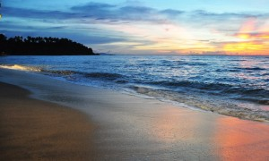

5 Tempat Wisata Terindah Di Lombok Nusa Tenggara Barat
November 14, 2017 Views : 42,99999Lombok adalah sebuah pulau yang berlokasi di sebelah timur Pulau Bali. Sektor pariwisata adalah sumber pendapatan terpenting bagi Lombok yang kebanjiran wisatawan setiap harinya. Sering dijadikan sebagai tempat wisata alternatif dari Bali, Lombok menawarkan tempat wisata yang tidak kalah bagus dari Bali. Apa saja tempat wisata di Lombok yang wajib dikunjungi?
1. Gunung Rinjani
Gunung Rinjani adalah ikon wisata sekaligus tempat wisata di Lombok yang paling terkenal. Dengan ketinggian lebih dari 3,700 meter, Gunung Rinjani adalah gunung berapi tertinggi kedua di Indonesia. Bagi penganut agama Hindu, Gunung Rinjani mempunyai nilai spiritual tersendiri karena dianggap merupakan tempat tinggal dari pada dewa. Wisata favorit di Gunung Rinjani adalah pendakian. Gunung Rinjani dianggap sebagai gunung dengan pemandangan terindah di Asia, sehingga banyak orang yang mendaki gunung ini untuk dapat menikmati pemandangan yang tiada duanya. Untuk dapat mencapai puncak Gunung Rinjani, Anda akan membutuhkan waktu beberapa hari, oleh karena itu persiapkanlah dengan matang segala kebutuhan Anda.2. Pantai Pura Batu Bolong
Pura batu bolong merupakan sebuah pura kecil yang terdapat di daerah Senggigi, Lombok. Apabila anda melakukan perjalanan darat dari Mataram menuju pelabuhan Bangsal (tempat penyebrangan reguler ke Gili Trawangan) melalui jalur pantai, anda akan melewati pura ini.Seperti halnya pura-pura yang yang ada di pulau Bali, pura ini juga mengharuskan pengunjung untuk menggunakan kain berwarna kuning di pinggang selama berada di dalam area pura, juga menjaga kesopanan karena sejatinya pura merupakan tempat ibadah keagamaan. Selain itu terdapat peraturan bahwa wanita yang sedang berhalangan dilarang memasuki area pura. Pura Batu Bolong terletak di daerah Senggigi, Lombok. Pura Batu Bolong berada di atas sebuah batu karang berwarna hitam yang menjorok ke arah laut. Di bagian tengah batu karang ini terdapat sebuah lubang, sehingga pura ini dinamakan Pura Batu Bolong. Seperti pura-pura pada umumnya di Bali, untuk dapat memasuki Pura Batu Bolong, Anda harus menggunakan kain berwarna kuning di pinggang. Pura Batu Bolong mempunyai latar belakang pemandangan Gunung Agung dan Selat Lombok, sehingga sangat indah sekali untuk berfoto-foto, terutama pada saat matahari tenggelam.3. Pantai Senggigi
 Pantai Senggigi adalah salah satu tempat wisata di Lombok yang paling ramai dikunjungi wisatawan. Berlokasi di bagian barat Pulau Lombok, Pantai Senggigi mempunyai suasana yang mirip dengan Pantai Kuta di Bali, namun mempunyai ombak yang tenang sehingga sangat cocok untuk kegiatan berenang dan snorkeling. Mempunyai garis pantai yang panjang, pantai ini akan memanjakan Anda dengan keindahan pasir pantai dan air laut yang jernih. Karena merupakan salah satu tempat wisata di Lombok yang paling terkenal, Pantai Senggigi mempunyai fasilitas penunjang wisata seperti restoran, hotel, bar, sarana transportasi, penjual pulsa, dan lain-lain yang sangat lengkap.4. Taman Narmada
Taman Narmada berlokasi di Desa Lembuak, sekitar 10 KM di sebelah timur kota Mataram. Taman seluas kurang lebih 2 hektar ini dibangun oleh Raja Mataram Lombok pada tahun 1727. Dulunya, taman ini digunakan sebagai tempat istirahat dan tempat upacara, sekarang taman ini telah beralih fungsi menjadi sebuah tempat wisata. Hal unik dari Taman Narmada adalah, desain taman ini merupakan replika mini dari Gunung Rinjani, selain itu terdapat juga sumber mata air dari Gunung Rinjani yang dipercaya dapat membuat Anda awet muda bila Anda membasuh muka dan meminum air tersebut. Taman Narmada salah satu wisata yang banyak dikagumi oleh para wisatawan, khususnya wisatawan nusantara. Nama taman ini berasal dari salah satu sungai suci yang berada di India, yaitu sungai Narmanadi. Taman ini juga merupakan replika dari gunung Rinjani dan danau Segara Anak yang berada di atas puncak Rinjani. menurut sejarah, tujuan taman ini dibangun adalah atas permintaan Raja. Dikarenakan umur Raja yang sudah tua pada saat itu, Raja merasa sudah tidak sanggup berjalan menaiki gunung Rinjani untuk melakukan ritual Pekaleman atau ritual qurban. Saat itulah kemudian Raja memerintahkan para designer arsitek kerajaan untuk membawa nuansa gununug Rinjani dan danau Segara Anak ke tengah perkotaan, dan jadilah taman ini sebagai duplikatnya. Taman Narmada menjadi salah satu destinasi favorite di wisata Lombok. Beberapa informasi dibawah ini berkaitan dengan taman Narmada, silahkan dibaca selengkapnya.5. Air Terjun Sendang Gile
Berlokasi di Lombok Utara, Air Terjun Sendang Gile berjarak sekitar 60 KM atau 3 jam perjalanan dari kota Mataram. Berada di kawasan Desa Senaru, Air Terjun Sendang Gile adalah pintu masuk awal pendakian Gunung Rinjani. Karena memiliki sumber air yang sama dengan air di Taman Narmada, air di Air Terjun Sendang Gile juga dipercaya dapat membuat Anda awet muda bila Anda gunakan untuk mandi atau membasuh muka. Untuk dapat menikmati air awet muda di Air Terjun Sendang Gile, Anda harus menaiki sekitar 200 anak tangga terlebih dahulu.